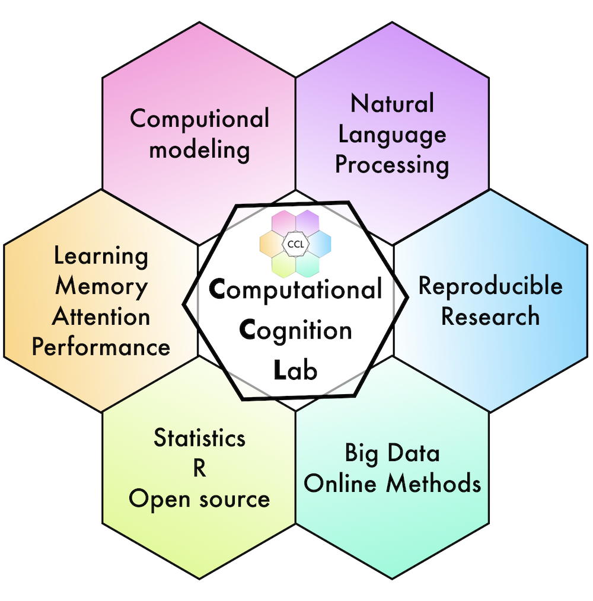

Yifei Cao Master Student Center for Brain and Learning Science, IDG/McGovern Institute for Brain Research, Beijing Normal University. No. 19 Xinjiekou Avenue, Beijing, China 102218. Office: 204 Center for Brain Imaging Building. Phone: (+86) 13080049712. email: 202121061013@mail.bnu.edu.cn
This is Yifei, a master student major in cognitive neuroscience at Beijing Normal University. Studying in Chinese’s Top 1 brain research institute, I am conducting research on several domains under the supervison of Prof. Xue, Gui. My current research interest includes: (1) uncovering the mental structure of human intelligence using both behavioural and meuroimaging approaches, (2) investigating the cognitive and neural basis of human cognitive control combining computational and neuroscience models, (3) finding the efficient way of training executive functions of different age period.
Current and previous lab members include undergraduate, master’s , doctoral, and postdoctoral researcher associates. If you are interested in human cognition and using computational techniques for theorizing, running experiments, analyzing data, and developing new technologies then you may be interested in joining the team.
The lab is located in the Department of Psychology at Brooklyn College of CUNY, and affiliated with the Cognitive and Comparative Psychology Training area of the Psychology Doctoral program at the Graduate Center of CUNY.